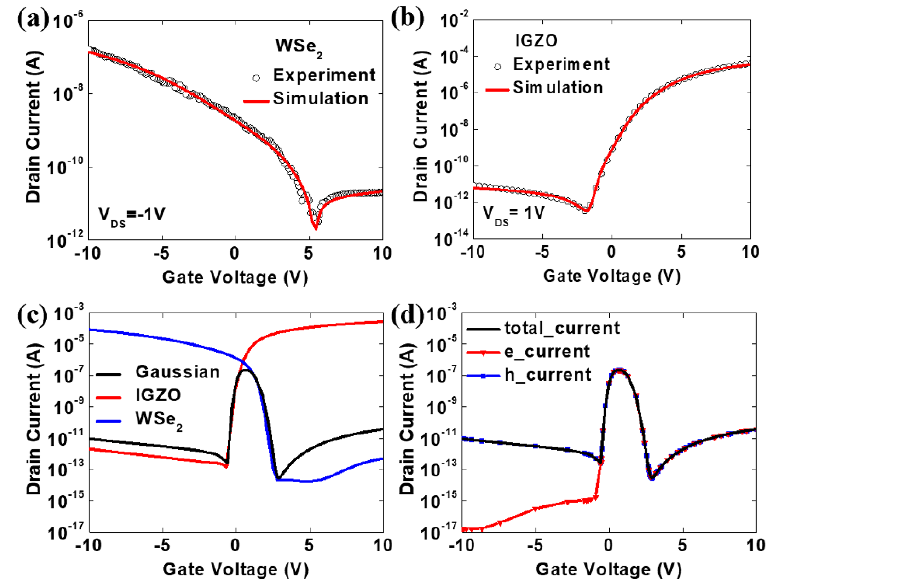
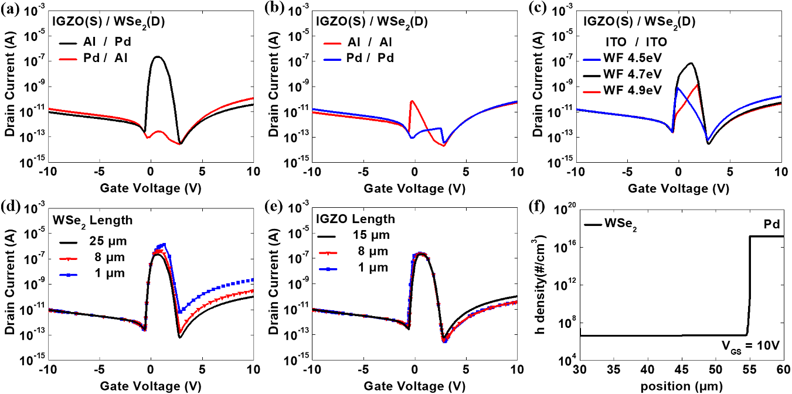
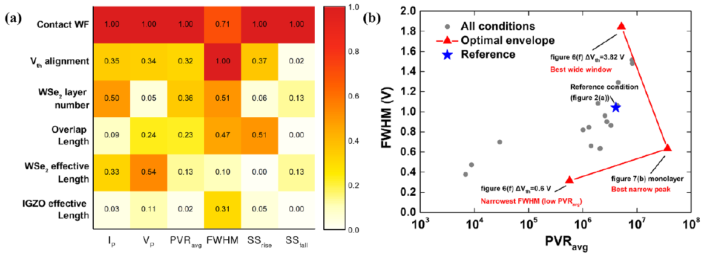

01목표
가우시안 응답의 형성 조건과 설계 기준
가우시안(anti-ambipolar) 트랜지스터는 특정 게이트 전압 구간에서만 전류가 흐르는 소자입니다. p형 WSe2와 n형 IGZO를 겹친 이종접합 구조에서 이 응답이 어떤 조건에서 생기는지 밝히고, 구조 변수별 영향을 정량화해 응용별 설계 기준을 제시하는 것이 목표였습니다.
| 구성 | 기준 구조 |
|---|---|
| 게이트 / 절연막 | p++ Si 백게이트 / Al2O3 90 nm |
| 채널 | IGZO 10 nm, WSe2 5 nm (8층) |
| 전극 | Al (IGZO 측), Pd (WSe2 측) 비대칭 배치 |
| 바이어스 | VDS 1 V |
02수행 내용
실측에 보정한 물리 모델과 구조 변수 분석
연구실에서 처음 도입한 TCAD라 이전 자료나 인수인계가 없었습니다. 매뉴얼과 문헌으로 물리 모델을 세우고, 연구실에서 제작한 WSe2, IGZO 단일 TFT의 실측에 보정했습니다.
- 100여 개 모델 변수를 문헌값으로 고정하거나 하나씩 조정해, 게이트 전압 구간별 지배 물리(trap, 게이트 누설, 이동도)를 분리
- 2D drift-diffusion 계산에 SRH 재결합, IGZO percolation 이동도, 비국소 터널링 모델 적용

구조 변수 7종 분석
나머지 조건을 고정하고 구조 변수를 하나씩 바꿔 peak 전압(VP), peak 전류(IP), 반치폭(FWHM), peak 대 valley 전류비(PVR) 변화를 분석했습니다.
| 구조 변수 | 분석 내용 |
|---|---|
| contact 일함수·대칭성 | 전극 일함수 조합과 대칭 여부 |
| Vth 정렬 | 두 채널 문턱전압의 상대 위치 |
| overlap 길이 | 두 채널이 겹치는 길이 |
| 적층 순서 | WSe2-on-IGZO와 IGZO-on-WSe2 |
| WSe2 유효 길이 | WSe2 채널의 유효 길이 |
| IGZO 유효 길이 | IGZO 채널의 유효 길이 |
| WSe2 층수 | 단층부터 다층까지 |
03문제 해결
계산 문제 해결과 자동화
수렴 실패
- 상황
- 게이트 누설 모델을 넣자 +0.3 V에서 계산 중단
- 확인
- 로그로 콘택 가장자리 전자 밀도가 0으로 무너지는 지점 특정
- 조치
- 그 모서리의 메쉬만 수정
- 결과
- +10 V까지 완주
계산 시간
- 상황
- 1회 실행에 13시간 소요
- 확인
- 로그로 행렬 조립 시간이 풀이 시간의 43배임을 확인
- 조치
- 반복 계산 설정 조정
- 결과
- 6시간으로 단축
메커니즘 검증
- 상황
- 가우시안 peak 전류가 SRH 재결합에서 나오는지, 캐리어 중첩에서 나오는지 구분 필요
- 확인
- SRH 수명 100배 변화에 peak 전류 변화 0.03% 미만
- 조치
- 재결합 분포를 캐리어 중첩 영역의 지표로 해석하고, 계면 트랩 밀도를 바꿔도 결론이 유지되는지 확인
- 결과
- n·p 동시 도통과 WSe2 쪽 캐리어 중첩이 응답을 결정한다는 해석으로 게재
피팅 자동화
- 상황
- 모델을 다시 설계할 때마다 반복 피팅에 수동으로 약 2개월 소요
- 조치
- 근거 조사, 감도 계산, 다음 조건 설계, 실행, 판정, 수치만 맞는 피팅을 거르는 감사의 6역할 AI 파이프라인 구축. 물리 모델과 전압 구간별 우선 특성은 직접 결정
- 결과
- IGZO 피팅 39회 실행 중 31회 수렴
04결과
응답 메커니즘과 구조 설계 지침
응답을 결정하는 메커니즘
밴드 다이어그램, 전자·정공 전류 분해, SRH 재결합 분포로 해석한 결과, peak 전류는 단일 채널의 turn-on이나 두 전류의 단순 합이 아니라 n·p 채널의 동시 도통과 WSe2 쪽 캐리어 중첩이 결정했습니다.
- WSe2 SRH 수명을 100배 바꿔도 적분 재결합은 비례해 변했지만 peak 전류 변화는 0.03% 미만
- 따라서 재결합 분포는 전류 기여자가 아니라 n·p 캐리어 중첩 영역의 공간·바이어스 지표로 해석
구조 변수별 응답 변화

- Al(IGZO 측)/Pd(WSe2 측) 배치에서 뚜렷한 peak가 나타나고, 배치를 뒤바꾸면 peak가 강하게 억제됨. Al/Al, Pd/Pd 대칭 전극에서도 한쪽 캐리어 공급이 약해져 peak가 약화
- 단일 대칭 전극은 일함수 4.7 eV에서 IGZO 전자와 WSe2 정공 공급이 균형을 이뤄 peak가 가장 뚜렷하고, 4.5 eV와 4.9 eV에서는 감소
- peak 형성은 유효 채널 길이에 좌우되지 않음. WSe2 유효 길이를 25 µm에서 1 µm로 줄이면 오른쪽 valley 전류가 약 2자릿수, IP가 약 6배 증가
구조 설계 지침
| 지표 | 기준 구조 | 단층 WSe2 | 변화 |
|---|---|---|---|
| 평균 PVR | 4.06×106 | 3.66×107 | 약 9.0배 |
| FWHM | 1.042 V | 0.633 V | −39.3% |
| IP | 2.14×10−7 A | 1.32×10−8 A | 약 1/16 |

- contact 일함수가 IP, VP, PVR, SS에 가장 큰 영향을 주는 1순위 설계 변수이고, FWHM은 Vth 정렬이 결정
- 단층 WSe2는 선택도, 다층은 출력 전류에 유리해 응용에 따라 층수를 고르는 trade-off
- 중간 일함수 단일 전극으로 비대칭 Al/Pd 전극을 대체해 공정을 단순화할 수 있음
05배운 점
배운 점
- 수많은 모델 변수는 고정할 것과 조정할 것을 나눠야 실측 특성을 지배하는 물리와 구조 변수의 영향을 구분할 수 있음
- 참고 자료 없이 익힌 새 도구도 원리를 세운 뒤에는 반복 작업을 자동화해 검증 주기를 줄일 수 있음